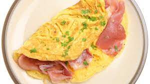

Tortilla a la francesa

Description
Una tortilla de huevos batidos mezclada, opcionalmente, con ingredientes al gusto.
Ingredients
- Huevos
- Aceite y sal
- Ingredientes al gusto - jamon, champiñones, queso, etc.
Steps
- Batir bien los huevos
- Calentar el aceita a temperatura media
- Vertir los huevos en la sartén
- Opcionalmente, echar los ingredientes sobre el huevo
- Darle la forma preferida y el punto medio de cocción a la tortilla.